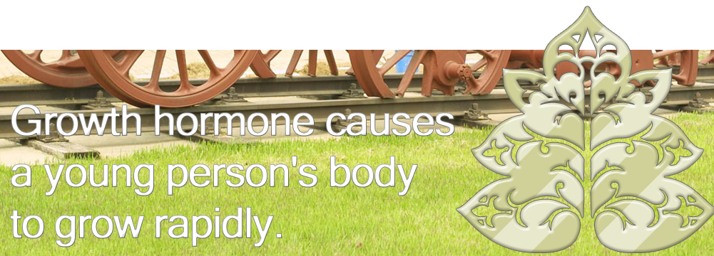

The Growth Clinic Story
Intormation
News
Clinic Test
FAQ
contact Us

Food Story For Growth
해독 기능이 뛰어난 여름철 수박 껍질 차
수박 껍질 차는 아무리 먹어도 살이 찌지 않기 때문에 한여름의 갈증을 없애고 스트레스로 갑갑증을 풀어주며 무더위를 날려 주는 데는 최고의 식품이다. 수박 껍질 속의 시트룰린 성분은 간에서 효소의 생성을 촉진하므로 과잉 생성된 성호르몬의 분해에 도움이 되며, 혈압을 낮추는 효과가 있다. 특히 수박 껍질차는 급성만성 신장염에 효과가 있으며 시트룰린이 많아 소변도 잘 나오게 한다.